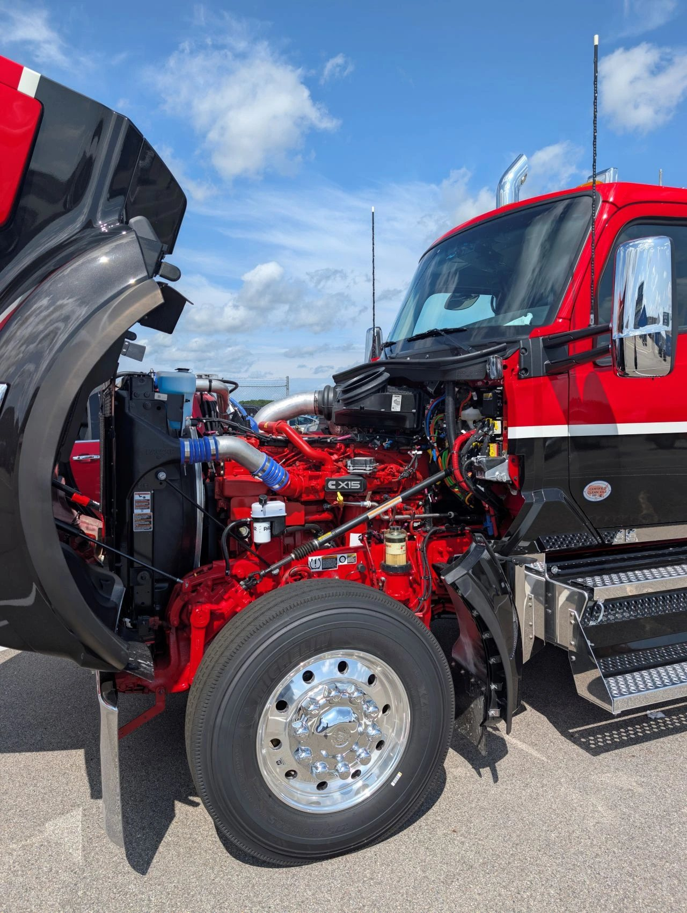

Internship
Cummins – Product Engineering Internship
- Company
- Cummins Inc.
- Team
- Decomposition Reactor Development
- Dates
- Jun – Dec 2025
- Location
- Stoughton, WI

Overview
Design and development of aftertreatment test hardware for Euro VII and Euro VI diesel emissions systems.
What I did
- Led design, development, and implementation of a universal diesel exhaust emissions test rig for an OEM's Euro VII and Euro VI aftertreatment systems, using Creo and ANSYS for structural, thermal, and CFD analysis
- Reduced rig manufacturing time by 6 weeks, saving $50,000 over original rig concepts and improving variable control
- Designed a modular hydrocarbon sampling rig to measure thermal and fuel efficiency of diesel oxidation catalysts
- Created a DEF deposit cleanout time function based on real-world test data to model downtime for X15 AT systems
- Developed aftertreatment test data analysis functions in MATLAB, including automated reports and processing
Results
6 weeksManufacturing time saved
$50KCost savings
Euro VII / VIAftertreatment systems